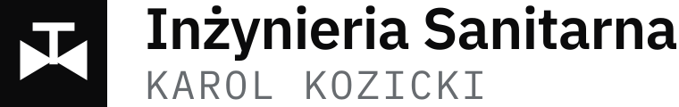
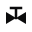
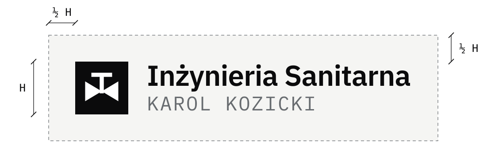

Księga znaku · wersja 1.0

Logo, kolory i zasady użycia
01
Symbol zaworu z rysunku instalacji: biały na czarnym kwadracie.
Dwa trójkąty stykające się wierzchołkami, a nad nimi trzpień z pokrętłem. Tak oznacza się zawór na każdym projekcie instalacji wodno-kanalizacyjnej, grzewczej czy gazowej.
Znak od razu mówi, czym firma się zajmuje, i łączy obie jej role: projektowanie i wykonawstwo. Jest na tyle prosty, że pozostaje czytelny nawet jako ikona wielkości kilku milimetrów.
02
Cztery wersje pokrywają wszystkie sytuacje. Innych nie trzeba tworzyć.
Na białym i bardzo jasnym tle: strona, dokumenty, pieczątka, wizytówka, oznakowanie samochodu.

Na czarnym i bardzo ciemnym tle, na przykład na odzieży roboczej albo ciemnej teczce.
Gdy jest mało miejsca: ikona strony, zdjęcie profilowe w serwisach, naklejka, plomba.

Sam znak na ciemnym tle.
03
Tylko czerń, biel i szarość. Firma nie ma koloru dodatkowego.
Kwadrat znaku, nazwa firmy.
Symbol zaworu, tło.
Nazwisko na jasnym tle.
Nazwisko na ciemnym tle.
Wartości do druku są orientacyjne; ostateczny odcień szarości warto potwierdzić z drukarnią na próbnym wydruku. W druku jednokolorowym szarość można zastąpić czernią.
Nazwa firmy
Inżynieria Sanitarna
AĄBCĆDEĘFGHIJKLŁMNŃOÓPRSŚTUWYZŹŻ
aąbcćdeęfghijklłmnńoóprsśtuwyzźż 0123456789
Także pismo tekstów na stronie internetowej.
Nazwisko
KAROL KOZICKI
AĄBCĆDEĘFGHIJKLŁMNŃOÓPRSŚTUWYZŹŻ
0123456789
Wersaliki, litery lekko rozstrzelone.
Oba pisma są bezpłatne, także do użytku firmowego (licencja SIL Open Font License 1.1). W plikach logo napis jest zamieniony na krzywe, więc do używania logo nie trzeba ich instalować.
04
Trzy proste reguły wystarczą, żeby logo wszędzie wyglądało tak samo.
Wokół logo zostaje wolne miejsce równe co najmniej połowie wysokości znaku. Nie wstawiamy tam tekstu ani innych grafik.

Poniżej tych wielkości nazwisko przestaje być czytelne. Wtedy używamy samego znaku.
Na wydruku w skali 100% powyższe przykłady mają rzeczywistą wielkość. Na ekranie: logo 28 pikseli wysokości, znak 16 pikseli.
Logo podstawowe stoi na białym lub bardzo jasnym tle, odwrócone na czarnym lub bardzo ciemnym. Na zdjęciu tylko tam, gdzie tło jest spokojne i jednolite.
Nie rozciągać ani nie ściskać.
Nie zmieniać kolorów.
Nie obracać ani nie pochylać.
Nie dodawać cieni, obrysów, gradientów.
Nie przepisujemy też nazwy innym pismem, nie zmieniamy układu znaku względem napisu i nie zaokrąglamy rogów kwadratu.
05
Do drukarni wysyłamy pliki SVG, do dokumentów i poczty wstawiamy PNG.
| Plik | Zawartość | Do czego |
|---|---|---|
| logo.svg | Logo podstawowe, wektor | druk, szyldy, oklejenie samochodu, strona |
| logo.png | Logo podstawowe, 1520 × 240 px, przezroczyste tło | dokumenty, oferty, stopka e-maila |
| logo-odwrocone.svg | Logo na ciemne tło, wektor | druk i haft na ciemnych materiałach |
| logo-odwrocone.png | Logo na ciemne tło, 1520 × 240 px, przezroczyste tło | prezentacje, ciemne grafiki |
| znak.svg, znak.png | Sam znak; PNG 512 × 512 px | ikony, zdjęcia profilowe, naklejki |
| znak-odwrocony.svg, .png | Sam znak na ciemne tło | ikony na ciemnym tle |
SVG to plik wektorowy: można go powiększać bez utraty jakości, od wizytówki po baner. PNG to gotowy obrazek o stałej wielkości, wygodny do wklejenia w dokument.